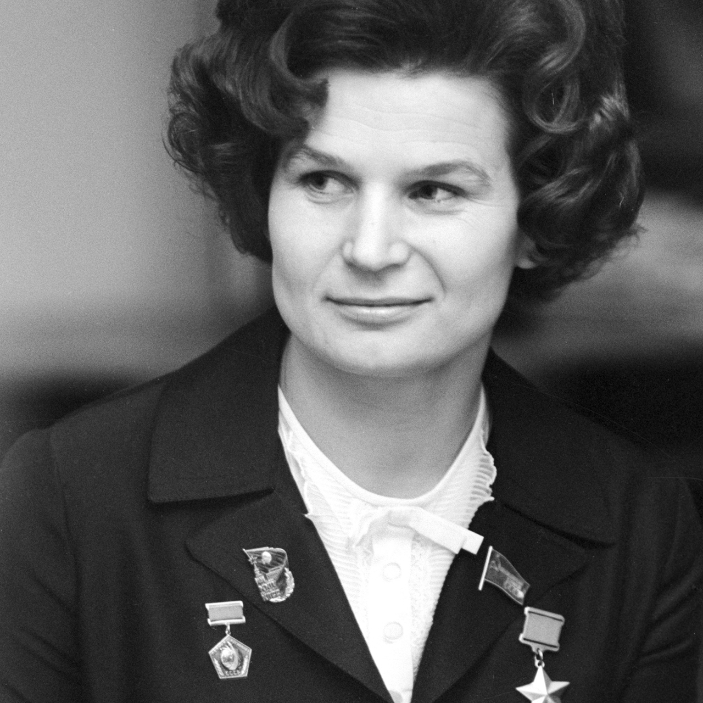
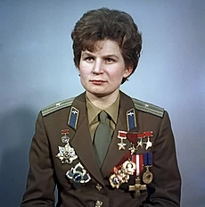

Полет первой женщины-космонавта

Валентина Терешкова – первая женщина космонавт является символом эпохи
• Она как никто другой сумела реализовать свои лучшие духовные качества – талант, энергию, характер, силу воли, настойчивость, изобретательность, выносливость, умение жертвовать собой во имя идеи, дела, своих близких.
Свой космический полёт (первый в мире полёт женщины-космонавта) Терешкова совершила 16 июня 1963 года на космическом корабле Восток-6, он продолжался почти трое суток. Старт произошёл на Байконуре не с «гагаринской» площадки, а с дублирующей. Одновременно на орбите находился космический корабль Восток-5, пилотируемый космонавтом Валерием Быковским. В день своего полёта в космос Терешкова сказала родным, что уезжает на соревнования парашютистов, о полёте они узнали из новостей по радио. Генерал-лейтенант Николай Каманин, занимавшийся отбором и подготовкой космонавтов, так описал старт Терешковой
